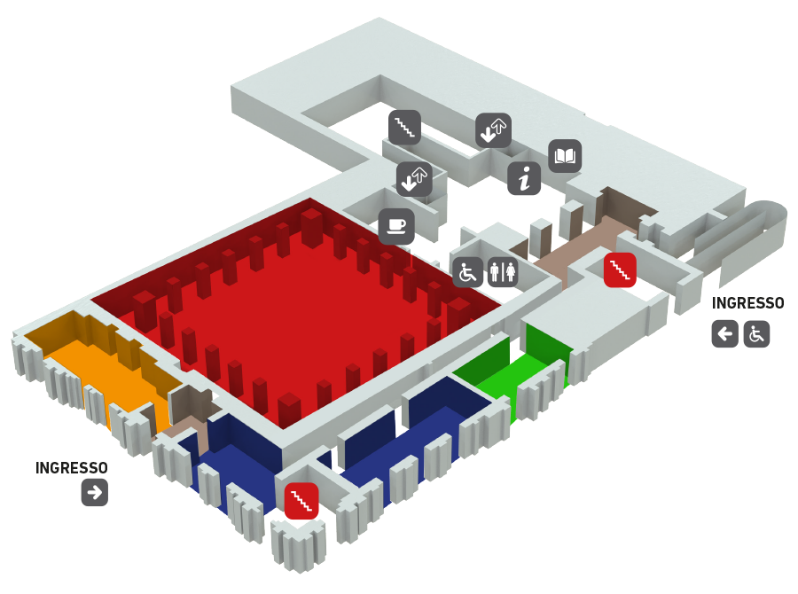

Il Museo si estende per 200Mq, la struttura è priva di barriere architettoniche per agevolare tutti i tipi di visitatori, sono presenti bagni, ascensori, e uscite di emergenza. Percorsi tattili, punti ristoro e bookshop. Il museo è diviso in stanze, dove in ognuna vi è ricostruita la storia di Torino.
| Lunedì | CHIUSO |
|---|---|
| Martedì | 9am - 5pm |
| Mercoledì | CHIUSO |
| Giovedì | 9am - 5pm |
| Venerdì | CHIUSO |
| Sabato | 9am - 5pm |
| Domenica | 9am - 5pm |